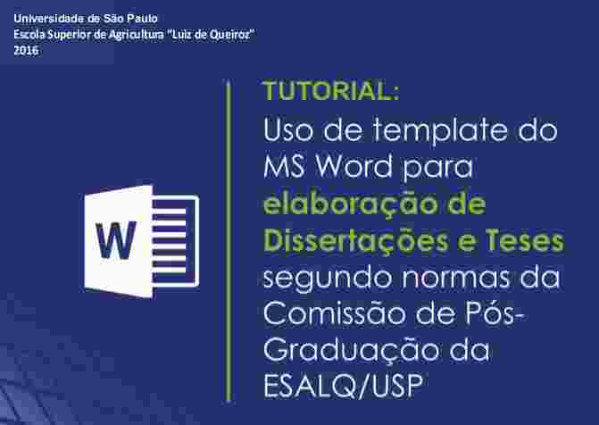
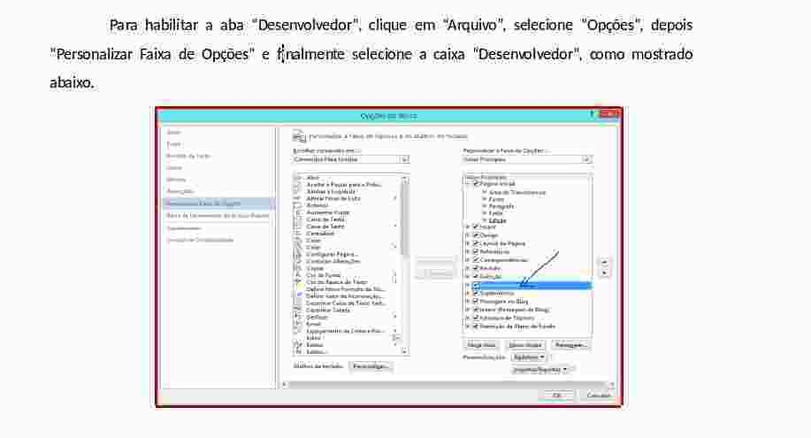
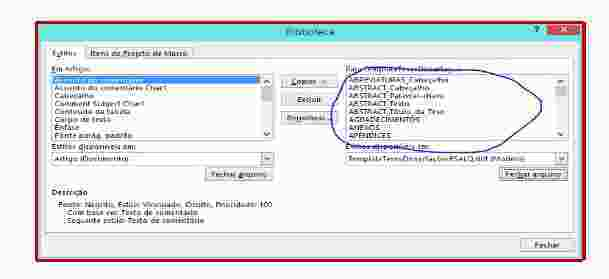
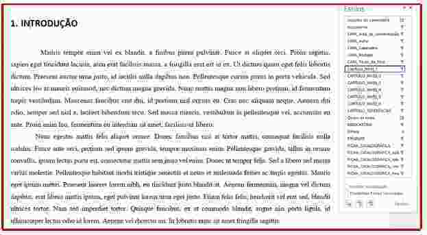
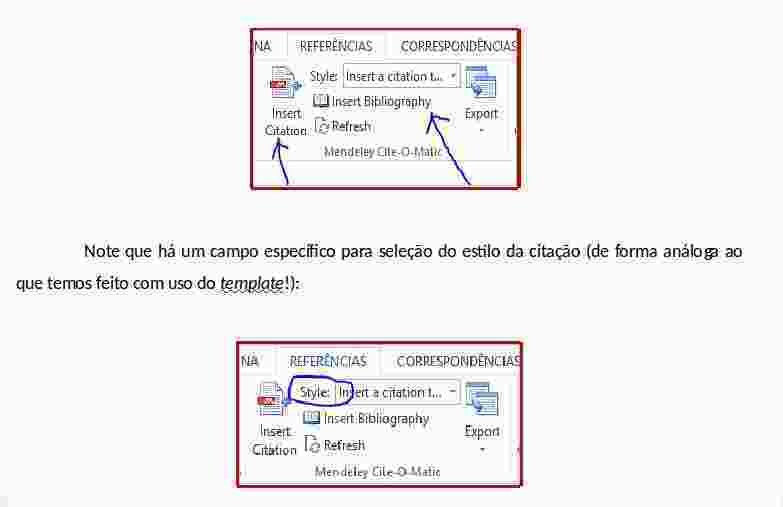

- O que faz um estudante/cientista/professor?
- Atividade comum: estudar, ler, produzir conteúdo, publicar
- Gerenciamento de uma grande quantidade de informação e conhecimento
Uso de templates para editoração e submissão de teses e dissertações
Use seu tempo de forma eficiente!
Antonio Augusto Franco Garcia (http://augustogarcia.me)
Departamento de Genética, ESALQ/USP (26/02/2019)
Introdução
Produção de Conteúdo
- Exemplos: planos de tese, projetos, relatórios, resumos, rascunhos, artigos, tese
- Foco no conteúdo, não nos formatos e regras
- Objetivo: eficiência e produtividade
- Uso de modernos recursos computacionais
Sumário
Templates
- Ideias gerais e conceitos importantes sobre o que são templates (modelos)
- "Demonstrações"
- Discussões
Quem sou eu?
- Professor Associado
- Editor
- Scientia Agricola (2012-2015)
- BMC Genetics (2015-2017)
- Theoretical and Applied Genetics (2013-)
- Diretor - Centro de Tecnologia da Informação Luiz de Queiroz (CeTI-LQ; antigo CIAGRI)
- Responsável pelo Laboratório de Genética Estatística
- Usamos templates
Informação
- Livros
- Artigos
- Internet
- Vídeos
- Palestras
- Cadernos
- Tablets
- \(\ldots\)
Cada vez é mais comum armazenarmos informação digital
Formatos
- Pastas suspensas com separatas
- Arquivos de diferentes tipos
- Anotações em cadernos/arquivos
- Marcação colorida nos artigos/anotações nos pdfs
- Seria ótimo se tais anotações pudessem ser convertidas em outros formatos
Padrões
- Arquivos (em formato pdf para artigos)
- ebooks
- Livros impressos
- Arquivos .mp4
- Lista de favoritos no Youtube
- Youtube
- Exemplo: Linear Algebra
Anotações
- "Marca-texto"
- Anotações
- Exemplo: Fermat
- Notas de rodapé
- Cadernos
- "Guardanapos"
- \(\ldots\)
Informação
- Onde guardei?
- Como lembrar?
- Como pesquisar?
- Pastas (diretórios): conceito ultrapassado
- Uso de labels (rótulos ou etiquetas)
- Estamos em 2019!
Reprodutibilidade
- Dados experimentais (vídeos, que tal?)
- Web
- Códigos para analisar os dados
- Slides usando html5
- Powerpoint?
Bagunça vs Reprodutibilidade
- Você arruma sua casa antes de receber visitas?
- Você gostaria que alguém repetisse as análises que você fez na sua tese?
- E sobre seus artigos já publicados?
Responsabilidade Institucional
- Referências Bibliográficas: um ótimo primeiro passo
- Lembre-se, temos o dever ético de citar corretamente o trabalho de outros autores
- Há outros pontos:
- Somos funcionários públicos: a sociedade não espera que usemos nosso tempo corrigindo se todos os artigos estão citados no texto, e vice-versa! (É fácil pensar em vários outros exemplos)
- Uso eficiente do tempo é bom para todos
- Templates para Teses e Dissertações da ESALQ
Reprodutibilidade
- Os arquivos estão seguros?
- Vou conseguir abri-los daqui 10 anos?
- Ebooks vs livro físico
- Consigo ter acesso as informações de forma eficiente?
- Metadados?
- Vários critérios de buscas?
- Pastas suspensas: classificação unidimensional
Programas
- Word, Excel, Powerpoint
- SAS
- \(\ldots\)
- Licenças institucionais (USP)
- Pirataria
Templates da ESALQ
- Multiplataforma (Windows, Mac, Linux)
- Word, LibreOffice, LaTeX, (Google Docs)
- Gerenciadores de Referências
- Tutoriais
- Fácil utilização
- Disponíveis do site da Biblioteca neste link
\(\LaTeX\)
- Sistema para produção de documentos de alta qualidade, principalmente com fórmulas
- Muito usado nas Ciências Exatas
Tutorial

Informações
- LER O TUTORIAL
- Parte Pré-textual
- Editar o arquivo TodasInformações.tex e fazer as alterações
- Não editar Ficha.tex
- Etc
- Parte textual: o conteúdo em si
- Veja no diretório referencias o arquivo bibliografia.bib
- COMPILE e veja Tese.pdf
Portabilidade
- Arquivos texto são os melhores!
- Arquivos texto vs binários
- Excel vs .csv
Referências Bibliográficas
- Grande parte do seu tempo será dispendido lendo/escrevendo publicações
- Será preciso constantemente retornar as anotações e fazer diferentes buscas
- Logo, qualquer investimento de tempo tem elevado retorno na produtividade
- O template de Teses e Dissertações prevê o uso de algum gerenciador de referências (mas não é restrito a única plataforma)
BibTex
- BibTex
- Formato texto, portátil, versátil, lingua franca
- Associado ao \(\LaTeX\), mas pode ser usado como base de dados
Formato
@misc{ patashnik-bibtexing,
author = "Oren Patashnik",
title = "BIBTEXing",
year = "1988" }
Exemplos
Mais detalhes: Wikibooks
Seja esperto. Crie sua base de dados em formato
que não seja dependente de programas específicos.
Gerenciadores de Referências
Pontos importantes
- Posso importar/exportar para o \(BibTex\) ou algum outro formato genérico?
- Posso usar o programa para incluir as citações nos meus trabalhos?
- Quais são os formatos para citação disponíveis?
- Posso expandir/alterar estes formatos?
Formatos para citação adotados pelas principais revistas
- Citation Styles, CSL, http://citationstyles.org
- Mais de 9000 estilos de citação abertos e gratuitos
- As principais revistas participam e contribuem
- Tais formatos podem ser importados em vários programas gerenciadores de referências
Word

Instale o template (arquivo com extensão .dotx)

Use a aba Desenvolvedor

Novos estilos estão agora disponíveis

Altere algumas configurações
- Tamanho da página
- Numeração
- Use os estilos do template





Sumário: feito automaticamente

Template com Gerenciador de Referências
- Fantástico!

Colaborador: Carlos Macedônio (LGN)
Colaborador: Fernando Mayer (LCE)
Etapas Futuras
OBRIGADO!